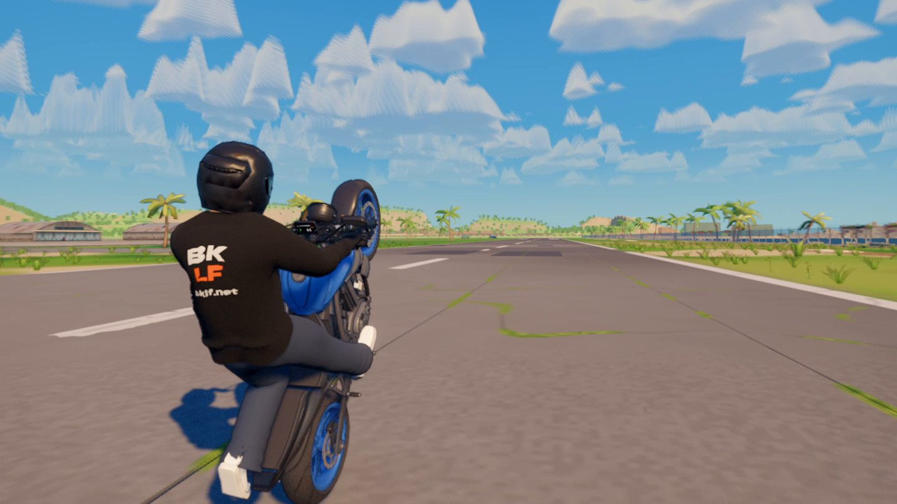

Real physics
Weight transfer, suspension, clutch and gearbox. Every wheelie is held on the throttle and your body, every crash is yours.

The ride
Real bikes, real physics, your thumbs on the throttle. Pull it up, hold it, send it. No rails, no scripted tricks: just you and the balance point.
Weight transfer, suspension, clutch and gearbox. Every wheelie is held on the throttle and your body, every crash is yours.
Wheelies, circles, stoppies, swerves, drifts, burnouts. No hands, knee on the seat, standing on it. Chain them, stack the score.
An abandoned tropical airfield to learn on, then a whole island to ride: city streets, mountain passes, coast roads, traffic.
28bikes
The garage
From 50cc to superbikes, each one with its own engine, sound and character. Stock or built for stunt.
Street bikes, from 125 to 1390cc. The stunt classics.
Built for it: hand rear brake, crash bars, stunt cage, short gearing.
Stock supersports and superbikes. Fast, sharp, unforgiving.
Sport tourers and big adventure bikes, for the long roads of the island.
Two and four strokes, from the 85 to the 450.
Dirt bikes on slicks. Backing it in, sliding it out.
Maxi-scooters and the 50s every rider started on.
Instant torque, no clutch, no noise. A different kind of wheelie.
Gallery
On the back wheel at the abandoned airfield. In game, early development.
The rider
Built by riders,
for riders.
BKLF is made by one person: Axel Gilbert, a French rider who has lived for bike life as long as he can remember. Every wheelie in the game was tuned with a pad in hand, until it felt right.
Axel Gilbert · France